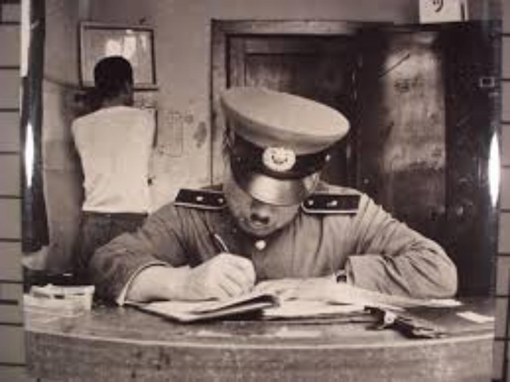
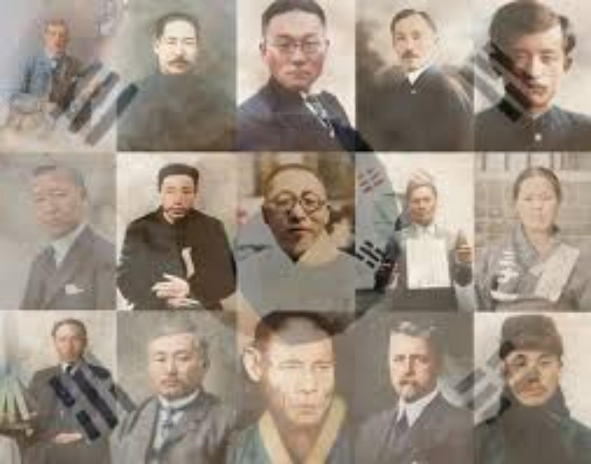

4명이 한 조가 되어 참여하는 체험형 게임입니다. 먼저 가위바위보를 통해 두 명은 일본 경찰,
두 명은 독립운동가 역할을 맡습니다. 게임은 술래잡기 방식으로 진행되며, 경찰은 독립운동가를 쫓아 얼음을 만듭니다.
잡힌 독립운동가는 움직일 수 없고, 다른 동료의 ‘땡!’ 터치로만 다시 움직일 수 있습니다.


가위바위보로 일본 경찰과 대결하세요!
경찰을 이기면 독립운동가가 잡히지 않습니다.
경찰이 이기면 독립운동가가 잡혀 얼음 상태가 됩니다! 도전해보세요!